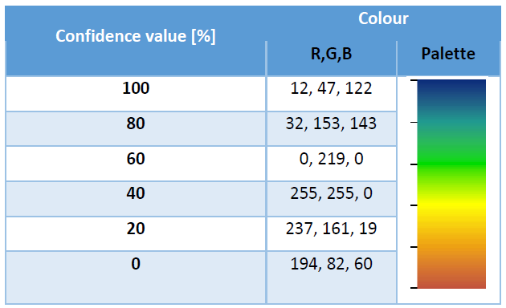

CLC+Backbone Product Specification and User Manual
Copernicus Land Monitoring Service
Sentinel-2 time series, Temporal Convolutional Neural Network, Land Cover Component (LCC), European Terrestrial Reference System 1989, Lambert Azimuthal Equal Area projection, Raster Confidence Layer, Data Score Layer, Raster Post-Processing Layer, Area-weighted Producer’s Accuracy, Area-weighted User’s Accuracy
Contact:
European Environment Agency (EEA)
Kongens Nytorv 6
1050 Copenhagen K
Denmark
https://land.copernicus.eu/
1 Executive Summary
Copernicus is the European Union’s Earth Observation Programme. It offers information services based on satellite Earth observation and in situ (non-space) data. These information services are freely and openly accessible to its users through six thematic Copernicus services (Atmosphere Monitoring, Marine Environment Monitoring, Land Monitoring, Climate Change, Emergency Management and Security). The Copernicus Land Monitoring Service (CLMS) provides geographical information on land cover and its changes, land use, vegetation state, water cycle and earth surface energy variables to a broad range of users in Europe and across the world in the field of environmental terrestrial applications. CLMS is jointly implemented by the European Environment Agency and the European Commission’s DG Joint Research Centre (JRC).
The ‘CLC+ Backbone’ constitutes the first component of the CLMS’s new ‘CLC+ Product Suite’, which represents a true paradigm change in European land cover/land use (LC/LU) monitoring, building on the rich legacy of the European CORINE Land Cover (CLC) flagship product. The CLC+ Backbone is an object-oriented, large scale, wall-to-wall (EEA-38), high-resolution (HR) inventory of European LC.
The CLC+ Backbone Product Specification and User Manual is intended to provide all product information to users that may be required for successful further-reaching analyses and applications.
The CLC+ Backbone is being produced in the European Terrestrial Reference System 1989 (ETRS89) and in Lambert Azimuthal Equal Area (LAEA) projection by a consortium of European service providers. It is a pixelbased, multi-temporal Copernicus Sentinel-2 time-series based raster product with 10 m spatial resolution and 11 basic LC classes. This raster product has first been produced for the reference 2018 and has been updated for the reference year 2021 (excluding the UK).
This document constitutes the Product Specifications and User Manual for the CLC+ BB Raster Product 2021. It provides detailed specifications for the CLC+ Backbone Raster Product, as well as all additional products, as well as a documentation of the applied production methodologies, together with discussions of the strengths and limitations of the products. Furthermore, the document contains summaries of the extensive internal validation conducted for the primary 11-class Raster Product.
2 Background of the Document
2.1 Scope of the Document
This Product Specification and User Manual is the primary document that users are recommended to read before using the product. It provides a description of the product characteristics, production methodologies and workflows, and information about the product quality. Furthermore, it gives information on the terms of use and product technical support. It constitutes the consolidated final Issue 1.0 of the document.
2.2 Content and Structure
In more detail, the document is structured as follows:
Chapter 3 presents a detailed product description, including details on the applied production methodology and workflow, as well as the technical specification of all available 2021 products;
Chapter 4 summarizes the information on the product quality, including details on the applied assessment procedure;
Chapter 5 provides information about product access and use conditions as well as on the technical product support;
Chapter 6 lists references to the cited literature; and
the Annexes provide technical details with respect to product file naming, colour palettes and projection parameters.
3 Product Description
This chapter provides a comprehensive overview of the CLC+ Backbone products’ specifications, putting them in the context of the overall CLC+ product suite of the Raster Update 2021 (Section 3.1), presenting the characteristics of the primary Raster Product (Section 3.2) and the various accompanying Additional Quality Layers and Expert Products (Section 3.3).
3.1 Overview of the product portfolio
The CLC+ Raster Product Update for the reference year 2021 comprises the primary Raster Product, representing an 11-class land cover classification at 10m spatial resolution and an MMU of one pixel (10m*10m = 100m²), as well as three expert products (see Figure 1). Those expert products are additional layers, which provide further information on quality of the Raster Product and comprise the Confidence Layer (the confidence of the initial class assignment), the Data Score Layer (the number of used valid Sentinel-2 observations) and the Raster Post-Processing Layer (marking pixels, whose initially assigned class code was adjusted during post-processing correction steps).

3.2 Raster Product
The CLC+ Backbone Raster Product 2021 is a 10m pixel-based land cover map (see Figure 2) based on Sentinel data for the reference year 2021 ± 3 months. Each pixel shows the dominant land cover among the 11 basic land cover classes. The following sections provide information on the product specifications (Section 3.2.1) including the nomenclature concept and class definitions (Section 3.2.1.1) as well as the related decision tree approach (?@sec-decision-tree-for-area-thesholds). Additionally, Section 3.2.1.3 provides some illustrated examples of typical cases of the Raster Product nomenclature and decision tree application. Details on the production methodology (Section 3.2.2), including an overview of the input data, the time series classification approach and postprocessing steps are given in sections Section 3.2.2.1 to Section 3.2.2.3. Additionally, Section 3.2.2.4 provides a comprehensive overview of the strengths and limitations of the applied approach.

3.2.1 Technical Product Specifications
The product specifications for the CLC+ Backbone Raster Product for the reference year 2021 are summarized in the table below. Further product details and information on nomenclature etc. can be found in the following sub-sections.
CLC+ Backbone Raster Product
Acronym: RASTER
Product family: CLMS_CLCplus
Summary: CLC+ Backbone is a spatially detailed, large scale, EO-based land cover inventory. The CLC+ Backbone Raster Product is a 10m pixel-based land cover map based on Sentinel time series from October 2020 to March 2022 and auxiliary features. For each pixel it shows the dominant land cover among the 11 basic land cover classes.
Reference year: 2021
Geometric resolution: Pixel resolution 10m x 10m, fully conform with the EEA reference grid
Coordinate Reference System: European ETRS89 LAEA projection / for French DOMs WGS84 and the respective UTM zone
Coverage: 5.749.035 km² (covering the full EEA-38)
Geometric accuracy (positioning scale): Equals Sentinel-2 positional accuracy in 2021 (< 11m at 95.5 % confidence level)
Thematic accuracy: 90 % overall accuracy, not more than 15 % omission errors and 15 % commission errors per class (the amount of omission and commission errors for particular difficult classes such as Low-growing woody plants and Lichens and Moses might regionally exceed those thresholds)
Data type: 8bit unsigned raster with LZW compression
Minimum Mapping Unit (MMU): Pixel-based (no MMU)
Necessary attributes: Raster value, class name, pixel count
Raster coding (thematic pixel values):
1: Sealed
2: Woody needle leaved trees
3: Woody Broadleaved deciduous trees
4: Woody Broadleaved evergreen trees
5: Low-growing woody plants
6: Permanent herbaceous
7: Periodically herbaceous
8: Lichens and mosses
9: Non and sparsely vegetated
10: Water
11: Snow and ice
253: Coastal seawater buffer
254: Outside area
255: No data
Metadata: XML metadata files according to INSPIRE metadata standards
Delivery format: GeoTIFF incl. pyramids (.ovr, level: 11, resampling: Nearest Neighbour), attribute table (.dbf), statistics (.aux.xml), colour tables (.clr) and INSPIRE-compliant metadata in XML format
The Raster Product for the reference year 2018 by definition does not provide a separation between inland water and coastal/sea water along a country’s sea border and in the respective 250m coastal buffer zone. For potential use cases intending to separate both, a clipping with a national/European coast line dataset was recommended therefore. In the 2021 Raster Product this separation of the seawater in the coastal buffer zone from the inland water has been introduced, to ease the use of the product. Further detail on the implementation of this separation is provided in Section 3.2.2.3.
3.2.1.1 Nomenclature concept and class definitions
Most of the class definitions for CLC+ Backbone Raster Product comprise a 50% area threshold to express that the dominant land cover should be assigned. While this is a plausible approach there are many situations where the land cover within a single 10m pixel comprises a spatial mix of different classes and no single class reaches an absolute majority of 50%. A simple example is provided in Figure 3.

To address this issue, a relative majority is used in most cases for the class assignment. This logic is implemented in detail through a decision tree approach which does not only define the area threshold but further clarifies and limits for each class the Land Cover Component (Figure 4) considered when evaluating the area threshold. The approach is detailed in Section 3.2.1.2 In general, the area fractions of different land cover classes are to be understood as what can be reasonably evaluated in HR and VHR remote sensing imagery at nadir.

Remark on the temporal dimensions of the land cover classes: In cases of land cover changes during the reference year and unless stated otherwise in the class definitions below (i.e. Permanent herbaceous vs. Periodically herbaceous, Snow and Ice), the dominant land cover (i.e. present > 6 month/ year) shall be mapped.
Textual descriptions of the main land cover components included in each of the 11 classes are provided in the following paragraphs. The area thresholds are explained in more detail in Section 3.2.1.2.
- Sealed:
Sealed Artificial Surfaces include all impervious and sealed surfaces that are covered mainly by features with a specific height above ground (buildings and artificial constructions) or features without a specific height above ground (flat impervious surfaces). Flat surfaces covered by any type of impervious material that is used for artificial surface pavements (e.g. asphalt, concrete, tarmacadam).
Includes: All sealed artificial surfaces and constructions including Buildings, Specific structures and facilities, and open sealed surfaces (EAGLE land cover components). Also vegetated rooftops are to be mapped under this class. Railway tracks are also considered as part of this class since they typically comprise impervious structural elements and a highly compacted subsoil.
Excludes: Waste materials (e.g. communal / industrial waste), non-sealed and semi-sealed artificial surfaces (e.g. nat. mat. displaced from original place, artificially consolidated, e.g. logistic and storage areas, festive squares, non-vegetated sport fields, grass pavers, permeable paving. Such areas are to be mapped as Non- and sparsely-vegetated since Biotic LC components do typically not exceed 30%.
- Woody - trees
Perennial woody plants with single, self-supporting main stem or trunk, containing woody tissue and branching into smaller branches and shoots.
| Excluded | Destination class |
|---|---|
| Pinus mugo and Alnus viridis | Low-growing woody plants |
| Ephedra | Low-growing woody plants |
| Shrub forms of Taxus, Juniperus and Betula | Low-growing woody plants |
| Musa | Permanent herbaceous |
2.1. Woody needle leaved trees
Needle leaved trees: referring to trees of the botanical group Gymnospermae (Ford-Robertson, 1971) carrying typical needle-shaped leaves. An exception is Ginkgo biloba which belongs to the Gymnospermae but is considered here as Broadleaved deciduous tree.
2.2. Broadleaved trees: referring to trees of the botanical group Angiospermae, with the exception of ginkgo (Ginkgo biloba), which belongs to the Gymnospermae taxonomically.
2.2.1 Woody Broadleaved deciduous trees: broadleaved trees which are leafless for a certain period during the year
2.2.2 Woody Broadleaved evergreen trees: trees that are never entirely without green foliage (includes palm-leaved species)
- Low-growing woody plants
Perennial woody plants with shrub growth form i.e. multiple stems arising at or near the base, height usually less than 5 metres. Leaf type can be needle leaf, broadleaf or palm leaf, phenology either evergreen or deciduous, leaf surface type can be regular or sclerophyllous.
Includes: regular bushes and dwarf shrubs, species such as Pinus mugo, Alnus viridis, shrub forms from the genus Ephedra, Taxus, Juniperus and Betula, subshrubs such as Thymus spec., Salvia, Rosmarinus, Calluna vulgaris, Erica spec. The class also includes Vitis spec. and Humulus spec., which are typically permanent crops, as well as Opuntia ficus-indica. Individual small trees in shrub-dominated areas are allowed in this class.
Excludes: Low-growing fruit trees (e.g. apple plantations), tree cover regrowth (e.g. after clear cuts) with sufficient density and trees in nurseries, which should be classified according to the definitions for Woody-trees
Remark: Due to the difficulty of differentiating shrubs / bushes from trees and herbaceous vegetation, the accuracies could be regionally below the defined target accuracies.
- Permanent herbaceous
Permanent herbaceous areas are characterized by a continuous vegetation cover throughout a year. No bare soil occurs within a year. These areas are either unmanaged or extensively managed natural grasslands or permanently managed grasslands, or arable areas with a permanent vegetation cover (e.g. fodder crops) or even set-aside land in agriculture. For managed grasslands, the biomass will vary over the year, depending on the number of mowing (grassland cuts) or grazing events.
According to IACS/LPIS definition a permanent and managed grassland may be ploughed every 3-5 years for amelioration purposes followed by an artificial seeding phase and a renewal of vegetation cover, thus potentially showing a phase of bare soil within a time frame of 5-6 years. Given that the observation period for the CLC+ Backbone Raster Product is of 1 year with a focus on land cover, such longer-term land use patterns cannot be considered and therefore grasslands which underwent ploughing within the reference year are typically mapped under the class 7. Periodically Herbaceous.
The class includes regular graminaceous (grasses), reeds and forbs, notably also natural dry grassland in Southern, South-Eastern Europe and Turkey, as well as banana plantations (Musa spec.).
- Periodically herbaceous
- Periodically herbaceous areas are characterized by at least one land cover change (in the sense of EAGLE land cover components) between bare soil and herbaceous vegetation within one year. Depending on the management intensities these areas can also have up to several changes between these two EAGLE land cover components within a year. Normally these areas are managed as arable areas.
- Lichens and mosses
Any type of lichens – composite organisms formed by a symbiotic relationship of a fungus and a photosynthetic partner (usually green algae or cyanobacteria);
Mosses: Non-vascular plants in the land plant division Bryophyta. They are small (a few centimetres tall) herbaceous (non-woody) plants that absorb water and nutrients mainly through their leaves and but also photosynthesize;
Typical vegetation class of northern European Tundra vegetation;
Remark: The mapping of this class is focused on larger areas in northern Europe where sufficient in situ data is available. Due to the difficulty to distinguish Lichens and Mosses from herbaceous vegetation and dwarf shrubs producer’s and user’s accuracies below 80% and a corresponding impact on the overall accuracy are to be expected.
- Non and sparsely vegetated (i.e. rock, screes, sand, permanent bare soils)
Contains consolidated and unconsolidated materials as well as permanent bare soils, where non-vegetated areas cover >= 70 % of the land surface;
Consolidated surfaces (rocks):
The rock surface is continuous except perhaps for a few cracks in the material. Some areas may be covered by shallow layers of soil or there could be isolated pockets of soil or a mixture of both;
Examples: solid (closed) rock formations, fresh lava flows, quarries, mineral extraction sites, open pit mines.
Unconsolidated surfaces (screes, sand, permanent bare soil)
Mineral Fragments come to be through mainly physical disintegration of geological formations and are the result of becoming smaller and smaller along time. They are accumulated on site due to sedimentary processes or human activity;
Includes variable particle sizes: boulders, stones, pebble, gravel, sand and clay
Examples: mountain slope debris, gravel river banks, open pit pebble mining of fossil river banks or fluvial sediments, volcanic lapilli fields, sand dunes, sand beaches, river sand banks, volcanic ash.
Permanent bare soil:
- Mixture of mineral and organic material that is fertile enough and capable of sustaining plant life, but being continuously un-vegetated during the entire observation period.
Sparsely vegetated areas:
- Sparsely vegetated on unstable areas (stones, boulders, rubble on steep slopes, or anthropogenic activity), due to harsh environmental conditions or anthropogenic interference. Biotic land cover below <30%.
Any other non-sealed artificial surfaces and constructions with a vegetation cover <30%.
Organic and in-organic deposits with a vegetation cover <30%.
- Water
Inland water in liquid state of aggregation, regardless of its shape, salinity and origin (natural or artificial);
Includes: running water (water courses) and standing water (natural lakes, fishponds, man-made reservoirs, pools, irrigation ponds, etc.);
Excludes: Seawater that is included in a buffer around the coast line. All water pixels beyond the coastline are classified as “coastal seawater buffer” (value: 253). This distinction is made to enable the derivation of reliable water statistics, especially for countries with long coastlines, where the area of seawater would distort any derived water statistics, otherwise. For more details on the methodology for the coastal seawater buffer derivation see Section 3.2.2.3
Remark: Regarding the temporal coverage the area should be under water at least 50% of the observation period; temporary ice cover of water bodies included.
- Snow and ice
Snow: areas covered permanently (> 90 % of observation period) with snow throughout the year;
Ice: persistent ice cover formed by accumulation of snow (up to 100 % of observation period);
and combinations of both (e.g. in case of glaciers being covered by snow for parts of the year)
3.2.1.2 Decision tree for area thresholds
The CLC+ Backbone Raster Product decision tree (Figure 5) complements the class definitions in Section 3.2.1.1 and the EAGLE LCC matrix (cf. Figure 4), to ensure a seamless definition of the classes not only for “pure” pixels, but also in cases of mixed land cover at the scale of the 10m resolution of the Raster Product. At each decision level, the decision tree defines the reference area which should be considered (blue text next to the rhombus) and the area threshold for a specific land cover class in percentages of the reference area (white text in rhombus). Generally, the decision tree targets to define an unambiguous assignment of pixels with (pure or) mixed land cover to the dominant land cover class. In accordance with the EAGLE concept, it refers to the dominant land cover independent of the land use. Pixels which are for example dominated by Permanent Herbaceous should be considered as such, even though the dominant land use might be an orchard, fruit plantation or Dehesa. Further examples are given in Section 3.2.1.3

3.2.1.3 Examples
Some concrete examples for the usage of the decision tree are provided in the following:
Example 1 – Hypothetical example - considering the mix which was already presented in Figure 3:

Does Water cover more than 50% (considering the sum of Water ∪Biotic ∪ Abiotic)? > NO
Does Biotic cover more than 50% (considering the sum of Biotic ∪Abiotic)? > YES
Does Woody cover more than 50% (considering the sum of Biotic)? > NO
Does Herbaceous vegetation cover more than 50% (considering the sum of Not Woody vegetation)? > YES
Does Periodically herbaceous cover more than 50% (considering the sum Herbaceous vegetation)? > NO
Does Permanent herbaceous cover more than 50% (considering the sum Herbaceous vegetation)? > YES
Permanent herbaceous
Example 2 – Real world example extracted from Figure 5 (Row 2, Column 5):

Sealed: 0 m²
Broadleaved evergreen trees: 17.54 m²
Permanent herbaceous: 2.34 m²
Non-vegetated: 80.12 m²
Does Water cover more than 50% (considering the sum of Water ∪ Biotic ∪ Abiotic)? > NO
Does Biotic cover more than 50% (considering the sum of Biotic ∪ Abiotic)? > NO
Does Sealed cover more than 50% (considering the sum of Abiotic)? > NO
Does Biotic cover more than 30% (considering the sum of Biotic and Abiotic)? > NO
Non- and sparsely-vegetated
Example 2 illustrates the application of the decision tree over an area with olive groves in Southern Spain. Since the growth of the understory is largely suppressed (tillage and use of herbicides are common) and the tree cover is relatively sparse, the Biotic coverage percentage for most pixels does not exceed the 30% threshold and the pixel should hence be considered as Non- and sparsely-vegetated. In cases where the suppression of the herbaceous understory is not continuous (i.e. alteration between herbaceous cover and bare soil within one year), such areas should be mapped as Periodically Herbaceous instead.
As illustrated in Figure 6, the same will apply for wide areas where such land cover characteristics are dominant, in line with the key paradigm of the EAGLE concept to disentangle land cover and land use.

Example 3 below (Figure 7) shows the map result for a rural area in France, illustrating some interruptions of small linear landscape elements (rural road in this case). The apparent omission of such narrow linear elements (e.g. narrow roads and water courses, narrow tree lines and hedge rows) is a common feature of the CLC+ BB raster Product, since a) such narrow landscape elements do often not occupy the majority of the pixels and b) are registered in the time series with a mixed spectral signal due to the sensor point spread function and imprecisions in the multi-temporal spatial co-registration.

Example 4 (Figure 8) illustrates the largely correct mapping of an area with sparse coniferous tree cover and herbaceous understory as class 6 (Permanent Herbaceous). While the mapping of such mixed areas might be unexpected for some users and might not be reflected in national / regional land cover maps, it correctly represents the dominant land cover and its spectral-temporal properties.

Example 5 concerns the mapping of Water and Permanent Snow & Ice, which are defined according to their spatio-temporal extent throughout the reference year, with at least 50% and 90% permanence within the period, respectively. As illustrated in Figure 9 and Figure 10, the production has taken these thresholds into account, considering temporal profiles of the NDVI and NDSI during the generation of training data, quality control and internal validation. It is therefore important to note that single satellite images at deliberate times can suggest different spatial extents for these two classes, depending on the time of acquisition. Time-series should be consulted in case of doubts for assessing the correctness of the extent in the Raster Product.

Figure 9: Example of the mapping of ephemeral classes in the CLC+ BB Raster Product. Water is mapped according to its spatio-temporal coverage during the reference year 2021. In the given example from the 2018 production, areas which are more than 50% of the observations covered by water (i.e. NDVI typically below 0), are correctly mapped as Water. Areas with shorter water coverage show an NDVI slightly above 0 for most of the time in this example and are correctly mapped as Sparsely- and Non-vegetated.

Example 6 (Figure 11) illustrates the mapping of some agricultural parcels in the Mediterranean, correctly as Non- and Sparsely Vegetated, if they have not been cultivated in the main growing season 2021 (i.e. October 2020 to July 2021 in the Mediterranean). The contrast is in particular clear, when contrasting with the temporal trajectory of neighbouring parcels, which were cultivated in the growing season (Figure 11 – Fields numbered as 2).

Example 7 (Figure 12) illustrates the mapping of dry grasslands (widespread in Southern Europe and Turkey) as Permanent Herbaceous. Though the vegetation signal is rather subtle, when compared to Permanent Herbaceous, for example in Central Europe, it is still sufficient to correctly distinguish such areas from Nonand Sparsely vegetated areas in those regions.

Example 8 (Figure 13) illustrates uncertainties in the mapping of intensively managed grassland (e.g. fodder crops) as either Permanent Herbaceous or Periodically Herbaceous. While the exposure of bare soil within the reference years can be clearly detected in most ploughed parcels (i.e. to be mapped as Periodically Herbaceous), there can be border cases where drought events and mowing events under rather dry conditions are not fully distinguishable from a bare soil exposure.

Example 9 (Figure 14) illustrates uncertainties in the mapping of the class Low-growing woody plants (bushes, shrubs) versus Woody trees. The main defining characteristics for the class Low-growing woody plants comprise the habitus (i.e. multiple stems emerging from the ground) and the typical height (i.e. typically below 5m), both of which are criteria which are typically difficult to evaluate from Sentinel-2 time series alone. While the spectral-temporal signature of shrubs allows a distinction from other land cover types to some degree (e.g. vineyards), there are many cases where this is less obvious. These comprise in particular sparse woody canopies in Nordic countries with mixtures of shrubs and trees even at the species level, Mediterranean Macchie mingle with trees or heathlands, with mixtures of dwarf shrubs and herbaceous species.

Example 10 (Figure 15) illustrates the typical similarity between surfaces covered by Lichens and Mosses versus Non- and Sparsely Vegetated areas with some fractions of sparse herbaceous vegetation. Both land cover compositions occur in the same biogeographic regions and are nearly indistinguishable in VHR imagery or NDVI time-series. In areas, where street level imagery and auxiliary data sources are available, it is possible to map and verify larger occurrences of this class, however, large uncertainties remain, in particular in remote areas with no or little adequate reference data.

3.2.2 Production Algorithm and Methodology
This section provides a methodological description of the production approach for the Raster Update 2021.
3.2.2.1 Input Data
The main input data source for the raster classification is Sentinel-2 time-series data, covering the period from 2020-10-01 to 2022-03-31. Compared to the 2018 production the time series has been shortened by 6 months, (i.e. starting 3 months later and ending 3 months earlier), in order to reduce the data volume and thus processing efforts. Initially all scenes at a processing level of L2A and with a cloud coverage lower than 80% are retrieved. Cloud-masks are computed using the Scene Classification Layer (SCL), provided by ESA. The EO data is processed in UTM projection and for each pixel all valid observations are taken into account, after masking out clouds and cloud shadows to interpolate an equidistant time-series with a total of 54 time-steps. This includes all S-2 bands except B10 and several spectral indices such as NDVI, NDWI, NDMI or NBR. Optional input data to support the classification in particularly difficult areas (Sentinel-1 time-series, mono-temporal auxiliary features extracted from DEMs, distance features derived from existing LC/LU maps) were extensively tested at several test sites during the early production phase in the 2018 production. These tests demonstrated, that the inclusion of such additional features did in most cases not lead to any significant accuracy gains. Considering also the overhead in terms of computational footprints, such additional data sources were finally not integrated. In particularly difficult areas, additional sampling and post-processing strategies were found more efficient, to address remaining issues in the classification results. The same approach has been applied for the Raster Update 2021, as well.
The training / validation and test data required for the model calibration is based on the sample data base (DB) from the 2018 production, which was compiled from various sources, such as from adjusted and filtered LUCAS[EUROSTAT 2018] data of 2018, from stratified automated LC class annotations based on existing land use/land cover maps, as well as from additional visual sample point photo-interpretation from VHR imagery, NDVI time series and auxiliary datasets. The latter comprise, amongst others, national LC datasets, aerial imagery, or LiDAR data collected by a European network of involved regional experts. CLMS HR-S&I was also considered to improve the sampling and classification for the class Permanent Snow & Ice, but was finally not integrated due to deviating product specifications, that would have rather degraded the classification results (e.g. the HR-S&I Permanent Snow Area does not consider ice, and sets a threshold of 95% permanence instead of 90% defined for the CLC+ Backbone Raster Product).
3.2.2.2 Time series classification
Given the heterogeneity of the addressed European landscapes, all classifier training, testing and, finally, LC classification, is performed along substrata based on biogeographical regions (Metzger et al. 2013) and existing LC layers. The AOI is subdivided in 132 of these substrata (i.e. Production Units, Figure 16). The regional calibration is performed iteratively using initially all readily collected samples from the 2018 production for a specific Production Unit to train and test a first model (i.e. 20% of the samples are withheld from training for testing). The classifier used is a Temporal Convolutional Neural Network (TempCNN) classifier, which outperforms the current state of the art classifiers for satellite image time series analysis, such as Random Forest (RF) or Recurrent Neural Networks (RNNs), as described in Pelletier et al. (2019).

During the model training there is an outlier detection, based on an open source python AI package called Cleanlab (Northcutt et al., 2021), which is identifying samples where the class label is in conflict with the expected characteristics for its class. This outlier detection was implemented in 15 iterations, where the train and test set composition is changing for each iteration. All samples that are flagged as potentially conflicting in each of the 15 iterations are finally extracted. Those so-called noisy samples are then reviewed by expert personnel and the class code is updated in case there has indeed been a LC change from 2018 to 2021 (or the sample had been mislabelled in the previous production). Subsequently the model is trained and tested again with the updated sample data base; this process is repeated until the accuracy metrics on the test set indicate that the required target accuracies are reached.
3.2.2.3 Post-processing
Post-processing steps comprise 1) bilateral filtering of the class probabilities, 2) blending of the probabilities along production unit borders and 3) an interannual calibration with the class probabilities from the 2018 production to ensure best possible product consistency, while still allowing for changes in the land cover, where there has indeed been a change and enhancements, where the 2018 showed weaknesses.
A bilateral filter is applied to reduce the salt and pepper noise in the classification while preserving edges. This type of filter tends to provide a good compromise between computational complexity and accuracy improvements (Schindler 2012). A small window size and low standard deviation was used to parametrize the filter in a way that favours the preservation of small details while still reduce label noise significantly.
The training data used for model calibration of neighbouring production units typically has some overlap to ensure consistency in the classification of neighbouring units. Nevertheless, differences in the model calibration could still lead to undesired edge effects at the borders of production units. To circumvent this issue each production units is initially produced with a buffer of 10km which ensures an overlap of 20 km among neighbouring units. Within this overlap a distance weighted averaging of the classification probabilities is performed so that probabilities from both models have an equal weight at the centre of the overlap area and increasing / decreasing weights respectively as a function of the distance to the centre of the overlap.
Finally, the 2021 probabilities are calibrated with the 2018 probabilities to create best possible consistency between both classification results. This postprocessing step builds around the computation of a pixel-based measure of change between the prediction probabilities of 2018 and 2021. Since the probabilities for each of the 11 possible classes per pixel can be interpreted as a point in an 11-dimensional space, the measure of change between two such points, i.e. the probabilities of 2018 (\(p_{2018}\)) and 2021 (\(p_{2021}\)), can be defined as the Euclidean distance between them:
\[ M_{change}\sqrt[2]{\sum_{i=1}^{11}(p_{2021}^{i}-p_{2018}^{i})^{2}} \]
The highest possible value for \(M_{change}\) is given by a change between two class predictions made with 100% certainty, as shown for a change from class 1 to class 2 here:
\[ p_{2021}=(1\ 0\ 0\ 0\ 0\ 0\ 0\ 0\ 0) \]
\[ p_{2018}=(1\ 0\ 0\ 0\ 0\ 0\ 0\ 0\ 0) \]
\[ M^{max}_{meas}=\sqrt[2]{2}={1.414}\ldots \]
With the direction of change known by comparing the 2018 and 2021 prediction rasters, this metric allowed the implementation of class-specific change thresholds by which pixels from the 2021 product can be identified as low or high-probability changes:
For most changes, a general threshold value was used (in theory, 110 change directions are possible). However, in some particular cases, change-direction-specific values had to be applied, i.e., very high thresholds for unreasonable changes (e.g., sudden changes between forest leaf types) and lower thresholds between classes, for which changes are more likely to happen (e.g., vegetation classes to bare soil or sealed due to construction activity or deforestation). Based on those thresholds, changes in the assigned LC class between 2018 and 2021 are allowed or suppressed, respectively.
In case of remaining issues in the 2021 Raster Product after the interannual calibration, those are addressed with a semiautomatic post-processing approach by defining AOIs where misclassifications are corrected with available auxiliary layers, like e.g. sealed surfaces, derived from Open Street Map (OSM) and the Imperviousness Degree layer from HRL Non-Vegetated Land Cover Characteristics (NVLCC). All pixels affected by changes during this semi-automatic post-processing are documented in the Raster Post-processing Layer (Section 3.3.3) delivered with the EEA-38 Raster Product.
Table 1: Overview of usage of auxiliary datasets during the post-processing routine
| Auxiliary dataset | Pseudo code | Explanation |
|---|---|---|
| OSM: Open Street Map roads, parking lots, runways and building footprintsIMD: Imperviousness Density High Resolution Layer Non-Vegetated Land Cover Characteristics 2021 | IF OSM != Sealed & IMD != Sealed & PROBA1<=7000THEN PRED==9 | • Reduction of omission of Sealed areas in particular for small features and coastal areas • Reduction of commission of Non- and sparsely vegetated in urban areas • Reduction of commission of Sealed in areas with little or no vegetation cover • Reduction of omission of Sealed for small roads |
| OSM: Open Street Map riverbanks, rivers, canals and derelict_canals | IF OSM== Water & PRED== 1 & PROBA10>=8000THEN PRED==10 | • Reduction of sealed commission in water bodies, which points to confusion between both classes. |
Implementation of the coastal seawater buffer separation
As a last step of the post-processing, the newly introduced separation of the coastal seawater buffer from inland water, is performed. This is done by using the EUhydro coast line with further improvements, implemented manually and by using the EEA-38 boundary layer, to derive a mask, covering the seawater areas within the respective 250m coastal buffer zone. The underlying pixels are then recoded to a unique raster code with the help of this masking layer. The coding and naming for this separate technical class were defined as “coastal seawater buffer” with raster code 253. The raster code 253 is in the range of the outside area and the no data values (254 & 255), which separates it from the 11 basic LC classes and shall prevent to imply a newly introduced thematic class, which it is not. This recoding of the water areas in the coastal buffer zone is implemented to enable the derivation of reliable water statistics, especially for countries with long coastlines, where the area of seawater would distort any derived water statistics, otherwise. The remaining water areas (class 10) represent the inland water, regardless its salinity. Figure 17 shows the 2018 product in comparison to the 2021 Raster Product with the newly introduced recoding of the coastal seawater buffer.

It has to be considered, that the derivation of the coastal seawater buffer is based on ancillary data (with some manual improvements) and therefore dependent on the quality of this data. Therefore, there might be inconsistencies where pixels of class 10 (water) remain within the coastal buffer zone and where inland water might be partially coded as 253 (coastal seawater buffer), in case the ancillary data shows inaccuracies in outlining the coastline.
3.2.2.4 Strengths and Limitations of the Applied Methodology
The strongest point of the applied methodology is a generally high accuracy and robustness for most land cover classes and biogeographical regions. This is the result of several elements including:
The ingestion of a full time series of 1,5 years of Sentinel-2 (i.e. 2021 ± 0.25 years) data, which comprises very rich information on the spectral-temporal dynamics of different land cover classes, generally enables a very good separability of the 11 target classes and partially even compensates some shortcomings in the Sentinel-2 L2A input data, such as topographic over-normalization on northto west-facing slopes.
The usage of a state-of-the-art Deep Learning architecture, that enables to fully leverage the full timeseries, without the need for feature engineering / selection, that typically leads to some loss of information.
A rich sample database of more than 1 million sample points, which have been allocated, curated and quality-checked based on various sources.
A regional calibration approach, which allows to address regional differences and particularly difficult cases in the classification.
Post-processing comprising the reduction of label noise (bilateral filtering), assurance of wall-to-wall consistency (blending) and consistency with the 2018 Raster Product (interannual calibration), as well as rule-based reduction of omission and commission errors.
Despite the excellent quality achieved with the applied methodology, some limitations remain. It is worth mentioning, that areas of heterogeneous land cover and small landscape features typically cause a relatively high uncertainty, due to mixed spectral-temporal signals. As already explained in Section 3.2.1.3, particularly the classes Low-growing woody vegetation (Figure 14) and Lichens and Mosses (Figure 15) have some inherent uncertainty due to i) some fuzziness in the class definition, ii) limited spectral-temporal separability and/or iii) limited reference data, in particular in remote areas; all three factors cannot be easily resolved on a methodological level. To a lesser degree, this also concerns areas with intensively managed grassland (Figure 13), where the exposure /non-exposure of bare soil within the reference year cannot always be determined with last certainty.
Further class specific issues are analysed with respect to the internal validation results in Section 4.3.
3.3 Additional Quality Layers and Products
The CLC+ BB Raster Product is accompanied by three auxiliary quality layers, which are explained in this section of the document.
3.3.1 Data Score Layer (DSL)
The product specifications for the CLC+ Backbone DSL layer are summarized in the following. Further details and information can be found below.
CLC+ Backbone Raster Data Score Layer
Acronym: DSL
Product family: CLMS_CLCplus
Summary: The Data Score Layer is a 10m pixel-based Quality Layer for the CLC+ Backbone Raster Product. It is based on Sentinel time series from October 2020 to March 2022 and auxiliary features. For each pixel it shows the dominant land cover among the 11 basic land cover classes.
Reference year: 2021
Geometric resolution: Pixel resolution 10m x 10m, fully conform with the EEA reference grid
Coordinate Reference System: European ETRS89 LAEA projection / for French DOMs WGS84 and the respective UTM zone
Coverage: 5.749.035 km² (covering the full EEA-38
Geometric accuracy (positioning scale): equals the Sentinel-2 positional accuracy in 2021 (~11m at 95.5% confidence)
Data type: 16bit unsigned raster with LZW compression
Minimum Mapping Unit (MMU): Pixel-based (no MMU)
Attributes:
| Field | Description | Type | Value range | Outside area |
|---|---|---|---|---|
| Value | Pixel value | Integer | 65535 | |
| Count | Number of pixels with the corresponding pixel value | Double | ||
| Obs_count | Number of cloud free observations | String | 0 – 200 in full EEA-38 | “Outside area” |
Delivery format: GeoTIFF incl. pyramids (.ovr, resampling: Nearest Neighbour), attribute table (.dbf), statistics (.aux.xml), colour tables (.clr).
The Data Score Layer (DSL) for the reference year 2021 ± 3 months presents the number of valid Sentinel-2 observations available to interpolate the equidistant time series (54 time steps), which is finally ingested into the classifier. Valid observations are defined as i) having a cloud coverage in the Sentinel-2 L2A metadata of max. 80% and ii) cloud and shadow free according to the cloud masks, derived from the SCL. The DSL can be considered as indicator for the quality of the available data base for the raster classification. The clearly visible stripe patterns (see Figure 18) from SW to NE correctly represent the different data quantities between the overlapping areas of the S-2 swaths. Besides this normal general pattern of the DSL, there are some patterns that are worth further explaining. Sentinel-2 GRANULE overlaps are often visible as horizontal and vertical stripes with slightly higher observation counts. This is due to the fact that in the overlap areas, there is a higher chance that one of the GRANULES fulfils the 80% cloud cover threshold. Compared to the DSL of the 2018 raster production, the values of the 2021 DSL are in general lower, due to the shortened time window used for the production.

The DSL for the French DOMs (not displayed in the figure above) is available as separate raster files in the respective national projections.
3.3.2 Raster Confidence Layer (CONF)
The product specifications for the CLC+ Backbone Raster CL layer are summarized in the following table. Further details and information can be found below the table.
CLC+ Backbone Raster Confidence Layer
Acronym: CONF
Product family: CLMS_CLCplus
Summary: The Confidence Layer is a 10m pixel-based Quality Layer for the CLC+ Backbone Raster Product. It provides information about the reliability of the land cover class assignment per pixel.
Reference year: 2021
Geometric resolution: Pixel resolution 10m x 10m, fully conform with the EEA reference grid
Coordinate Reference System: European ETRS89 LAEA projection / for French DOMs WGS84 and the respective UTM zone
Coverage: 5.749.035 km² (covering the full EEA-38)
Geometric accuracy (positioning scale): equals the Sentinel-2 positional accuracy in 2021 (~11m at 95.5% confidence)
Data type: 8bit unsigned raster with LZW compression
Minimum Mapping Unit (MMU): Pixel-based (no MMU)
Attributes:
| Field | Description | Type | Value range | Outside area |
|---|---|---|---|---|
| Value | Pixel value | Integer | 254 | |
| Count | Number of pixels with the corresponding pixel value | Double | ||
| Confidence | Confidence value in percentage | String | 0 – 100 | “Outside area” |
Delivery format: GeoTIFF incl. pyramids (.ovr, resampling: Nearest Neighbour), attribute table (.dbf), statistics (.aux.xml), colour tables (.clr).
The Raster Confidence Layer provides information about the reliability of the land cover class assignment per pixel (Figure 19). More specifically, it depicts the difference of the probabilities for the highest ranked class and the second highest ranked class (often referred to as probability margin), whereas high values are an indicator for a higher confidence of the classifier regarding the assigned class. The partially visible edges between adjacent Production Units are the result of different regional classification model trainings. Areas with lower confidence are typically concentrated in transition areas, with a higher degree of mixed spectral-temporal signatures from mixed land cover types.

The CONF for the French DOMs (not displayed in the figure above) is available as separate raster files in the respective national projections.
The distribution of the raster confidence values is displayed in Figure 20. It shows a significant increase of confidence values from approximately 90% upwards. Overall, ~67% of all classified pixels have been assigned to the respective dominant class (out of max. 11 classes) with a confidence of ≥ 50%. Considering the classifier’s general difficulty to distinguish between up to 11 classes (depending on the present land cover in the respective regions), this shows that the classifier was able to draw on a sufficiently large data and sample basis, to resolve most uncertainties in the classification. While this measure of uncertainty is not always a good proxy for the distribution of errors (i.e. in case of spectral-temporal similarity, the classification can still commit an error with high confidence), it is worth noting that areas with lower confidence generally coincide with areas where land cover classification is generally more difficult (i.e. Southern Europe, Norway and Iceland)

3.3.3 Raster Post-processing Layer (POST)
The product specifications for the CLC+ Backbone Raster Post-processing Layer are summarized in the following table. Further details and information can be found below the table.
CLC+ Backbone Raster Post-processing Layer
Acronym: POST
Product family: CLMS_CLCplus
Summary: The Post-processing Layer is a 10m pixel-based Quality Layer for the CLC+ Backbone Raster Product. It provides information of pixels that were re-coded during post-processing of the raster classification.
Reference year: 2021
Geometric resolution: Pixel resolution 10m x 10m, fully conform with the EEA reference grid
Coordinate Reference System: European ETRS89 LAEA projection / for French DOMs WGS84 and the respective UTM zone
Coverage: 5.749.035 km² (covering the full EEA-38)
Geometric accuracy (positioning scale): equals the Sentinel-2 positional accuracy in 2021 (~11m at 95.5% confidence)
Data type: 8bit unsigned raster with LZW compression
Minimum Mapping Unit (MMU): Pixel-based (no MMU)
Post-processing coding:
0: No change during post-processing
1: Recoded during post-processing
Attributes:
| Field | Description | Type | Value range | Outside area |
|---|---|---|---|---|
| Value | Pixel value | Integer | 0 – 1 | 254 |
| Count | Number of pixels with the corresponding pixel value | Double | ||
| Class_name | If the pixel went through change during post-processing or not | String | “Outside area” |
Delivery format: GeoTIFF incl. pyramids (.ovr, resampling: Nearest Neighbour), attribute table (.dbf), statistics (.aux.xml), colour tables (.clr).
The Raster Post-processing Layer for the CLC+ Backbone Raster Product 2021 marks all pixels, which were recoded during the post-processing of the raster classification (Figure 21). The green areas represent these recoded and thus improved areas. The rulesets were intentionally tailored to be rather conservative and introduce changes only where auxiliary layers provide very reliable information. This is reflected in the very small fraction of pixels that underwent automated corrections (0.1%) during the post-processing.

The POST for the French DOMs (not displayed in the figure above) is available as separate raster files in the respective national projections.
3.3.4 National Projections of the Raster Product
Besides the full EEA-38 extent, the CLC+ 2021 Raster Product is additionally available in the national projections of the single countries. In total there are 47 re-projected raster products, consisting of the 38 member and cooperating countries, including the French DOMs and the Portuguese and Spanish islands (Madeira, Azores, Canaries) as separate projections. Figure 22 shows the national projection of the CLC+ Raster Product 2021 for French Guiana as an example.

4 Product Quality
This section provides the internal validation results of the CLC+ BB Raster Product 2021. The internal validation has been performed as internal task of the CLC+ Backbone Raster Product creation, but completely separated and independent of the production team.
4.1 Methodological approach
The sampling design, implemented for CLC+ BB raster 2018 has been reused as a basis for the validation of the CLC+ BB Raster Product 2021. Indeed, the stratification has been applied at two levels:
Stratification according to countries and group of countries greater than 90,000km²
Stratification based on the CLC+ BB Raster Product classes based on the map products
The sampling plan has been established in an appropriate sampling frame and sampling unit. The distribution of samples is done per validation reporting area (i.e. entire country, or group of countries for the smaller ones). The validation results are first given at European level, then the analysis was performed over the EEA-38 countries/groups (UK excluded after Brexit). The according reporting zones are shown in Figure 23.

An overview of the sampled areas and the distribution of samples per class for the Raster Product are provided in Table 2 and Table 3.
Table 2: Overview of the validated areas (zones) of the CLC+ BB Raster Product 2021
| Zone | Acronym | Country | Coverage ( Entirely / Partially / not at all) |
|---|---|---|---|
| Z 1 | TR | Turkey | Entirely |
| Z 2 | FR | France | Entirely |
| Z 3 | ES-AD | Spain-Andora | Entirely |
| Z 4 | SE | Sweden | Entirely |
| Z 5 | DE | Germany | Entirely |
| Z 6 | FI | Finland | Entirely |
| Z 7 | NO | Norway | Entirely |
| Z 8 | PL | Poland | Entirely |
| Z 9 | IT-MT | Italy - Malta | Entirely |
| Z10 | IE | Ireland ( excluded United Kingdom ) | Entirely |
| Z11 | RO | Romania | Entirely |
| Z12 | CY-EL | Cyprus-Greece | Entirely |
| Z13 | BG | Bulgaria | Entirely |
| Z14 | IS | Island | Entirely |
| Z15 | HU | Hungaria | Entirely |
| Z16 | PT | Portugal | Entirely |
| Z17 | AT-CH-LI | Austria-Switzerland -Liechtenstein | Entirely |
| Z18 | BE-DK-LU-NL | Belgium - Danmark - Luxembourg - Netherlands | Entirely |
| Z19 | AL-KX-MK-ME-RS | Albania- Kosovo- Macedonia- Montenegro-Serbia | Entirely |
| Z20 | SI-HR-BA | Slovenia- Croatia- Bosnia & Herzegovina | Entirely |
| Z21 | CZ- SK | Czech Republic - Slovakia | Entirely |
| Z22 | LV-LT-EE | Latvia- Lithuania-Estonia | Entirely |
| Z23 | DOM | French overseas departments | Entirely |
Table 3: Distribution of sampling units in each CLC+ BB Raster 2021 class
| Code | CLC+ BB Raster Product- Description | 2021 area (sq.km) | Area fraction | Samples distribution |
|---|---|---|---|---|
| 1 | Sealed | 164 291,41 | 2,84% | 3118 |
| 2 | Woody – needle leaved trees | 972 504,79 | 16,82% | 4594 |
| 3 | Woody – Broadleaved deciduous trees | 894 508,77 | 15,47% | 5200 |
| 4 | Woody – Broadleaved evergreen trees | 206 503,77 | 3,57% | 1888 |
| 5 | Low-growing woody plants (bushes, shrubs) | 265 351,77 | 4,59% | 3636 |
| 6 | Permanent herbaceous | 1 673 943,65 | 28,95% | 7467 |
| 7 | Periodically herbaceous | 1 079 767,56 | 18,67% | 5266 |
| 8 | Lichens and mosses | 27 033,24 | 0,47% | 510 |
| 9 | Non- and sparsely-vegetated | 233 655,77 | 4,04% | 3983 |
| 10 | Water | 247 860,14 | 4,29% | 3537 |
| 11 | Snow and ice | 16 544,71 | 0,29% | 1294 |
| Total | 5 781 965,57 | 100,00% | 40493 |

Figure 24 shows the sampling design distribution for the different zones of the EEA 38.
Response design
Regarding the response design, a photo-interpretation tool was implemented (customization of QGIS software, Figure 25). Different source data sets are used in the interpretation process: Sentinel-2 data, VHR imagery provided by ESA and also Google Earth and Microsoft (Bing) as well. Within available Sentinel-2 data, whenever possible images of 2 seasons are displayed: summer and winter in order to better distinguish certain land cover classes. NDVI profiles are also available for each validation point – an example is shown in Figure 26.


The 2021 CLC+ BB Raster Product validation is established on the basis of the same sampling design used to validate the 2018 CLC+ BB Raster Product. The validation samples are checked by experienced photointerpreters, in order to assess the correct 2021 code.
All samples showing a difference between the 2018 and 2021 map codes or a difference between at least one of the map codes and the 2018 plausibility analysis have systematically been re-interpreted.
When assessing a sample point, the photo-interpreter has access to the following attributes values: map classes of 2018 and 2021, and the validation code from 2018. The interpreter assesses if the map 2021 class can be considered as correct or not, and fills the 2021 validation code attribute. The interpreter considers the pixel at the point and also takes into account the nature of the object.
Statistical analysis and Estimation
The following section contains the results from the thematic accuracy assessment of the CLC+ Backbone Raster Product for the reference year 2021.
According to the accuracy requirements, specified for the CLC+ Backbone Raster Product, the minimum overall accuracy for the products is 90% and the minimum individual class accuracy should not be lower than 85% (i.e. omission errors and commission errors less than 15%).
Table 4: General requirement: Accuracy thresholds
| Overall accuracy | > 90 % | 85 - 90 % | < 85% |
|---|---|---|---|
| Per Land cover class | > 85 % | 80 - 85 % | < 80 % |
| Omission and commission errors | <15% | 15-20% | >20% |
Table 5: Calculated accuracy parameters determined for the validation
| ACCURACY PARAMETER | ABBREVIATION |
|---|---|
| OVERALL ACCURACY | OA |
| OVERALL ACCURACY UNCERTAINTY | ΔOA |
| OMISSION ERROR | OE |
| PRODUCER ACCURACY | PA |
| PRODUCER ACCURACY UNCERTAINTY | ΔPA |
| COMMISSION ERROR | CE |
| USER ACCURACY | UA |
| USER ACCURACY UNCERTAINTY | ΔUA |
Table 6: List of CLC+ BB Raster Product classes

4.2 Results
This section provides the evaluation of the EEA-38 Raster Product. The analysis was performed over 100% of this coverage (including the French DOMs) and the thematic evaluation is based on Woody needle leaved trees.
The overall accuracies obtained in the frame of the validation exercise are Woody needle leaved trees, so the results are above the expected 90% threshold.
Table 7 summarizes overall accuracies obtained by zone (country or group of countries) for the internal validation CLC+ BB 2021 Raster Product including the 95% confidence intervals. In addition, the table shows the accuracies of the 2018 Raster Product in comparison. While in the 2018 production three country´s evaluations did not reach the requirements regarding the overall accuracy, only the result for Portugal remains marginally below the 90% in the 2021 production (only by 0.2%). Considering the confidence interval, the classification for Portugal also meets the requirements.
The detailed analysis for the CLC+ BB validation exercise in 2021 per reporting zone (producer, user and overall accuracies per zones) are provided in the Annex of this User Manual.
Table 7: Overall accuracy for the validation analysis and confidence interval (95%) for the Raster Product 2021 (EEA-38) per country or group of countries in comparison to the 2018 results
| Overall accuracy CLC+BB-2018 RASTER PRODUCT | Overall accuracy CLC+BB-2018 RASTER PRODUCT | Overall accuracy CLC+BB-2021 RASTER PRODUCT | Overall accuracy CLC+BB-2021 RASTER PRODUCT | ||
|---|---|---|---|---|---|
| Zone Country or group of countries (EEA38) | Zone Country or group of countries (EEA38) | PLAUSIBILITY ANALYSIS | Confidence interval of 95% | VALIDATION ANALYSIS | Confidence interval of 95% |
| Z 1 | Turkey | 92,20% | 1,50% | 93,90% | 1.40% |
| Z 2 | France | 94,90% | 1,10% | 94,90% | 1,10% |
| Z 3 | Spain-Andorra | 93.20% | 1.20% | 93,50% | 1.20% |
| Z 4 | Sweden | 91.90% | 1.50% | 95,10% | 1,10% |
| Z 5 | Germany | 95.50% | 1.00% | 95,20% | 1,10% |
| Z 6 | Finland | 94.10% | 1.20% | 94,50% | 1,20% |
| Z 7 | Norway | 91.60% | 1.40% | 92,40% | 1,30% |
| Z 8 | Poland | 96.40% | 1.00% | 96,80% | 0,90% |
| Z 9 | Italy - Malta | 89.90% | 1.90% | 91,70% | 1,40% |
| Z10 | Ireland | 91.30% | 1.50% | 96,60% | 2,00% |
| Z11 | Romania | 94.70% | 1.10% | 94.90% | 1.10% |
| Z12 | Cyprus-Greece | 87.90% | 1.80% | 91,00% | 1.60% |
| Z13 | Bulgaria | 94.10% | 1.30% | 96,50% | 1.0% |
| Z14 | Island | 91,70% | 1.60% | 91,40% | 1.50% |
| Z15 | Hungaria | 94.20% | 1.20% | 97.70% | 0.70% |
| Z16 | Portugal | 89.90% | 1.50% | 89.80% | 1.60% |
| Z17 | Austria-Switzerland -Liechtenstein | 95.90% | 1.10% | 96.70% | 1.00% |
| Z18 | Belgium - Danmark - Luxembourg - Netherlands | 91.90% | 1.50% | 94.60% | 1.20% |
| Z19 | Albania- Kosovo- Macedonia- Montenegro-Serbia | 94.70% | 1.20% | 95,40% | 1.10% |
| Z20 | Slovenia- Croatia- Bosnia & Herzegovina | 90.40% | 1,60% | 93,80% | 1.30% |
| Z21 | Czech Republic - Slovakia | 97.20% | 0.80% | 97.20% | 0.80% |
| Z22 | Latvia- Lithuania-Estonia | 91.60% | 1.40% | 93,10% | 1.30% |
| Z23 | French overseas departments | 97.60% | 0.60% | 98,30% | 0,40% |
| GLOBAL ACCURACY | 91,90% | 0,30% | 93,70% | 0,30% |
More differentiated analyses of area-weighted Producer’s and User’s Accuracies per raster class are presented in Table 8. Considering the plausibility analysis, most classes feature rather low rates of omission and commission error below the target value of < 15%. Exceptions are class 5 (Low-growing woody vegetation), for which lower accuracies have already been anticipated and class 8 (Lichens and Mosses), which is generally subject to high uncertainties in both, the classification and validation in particular because of the limited spectral-temporal separability and reference data. Nevertheless, those classes representation could be improved compared to the 2018 product.
Table 8: Area-weighted per class Producer’s and User’s Accuracies of the CLC+ Backbone Raster Product 2021 (EEA-38) in comparison to the 2018 results

The stratification and sampling design proved efficient ensuring a good representation of all eleven Land-Cover classes whilst providing precise overall thematic accuracy results for EEA-38.
4.3 Analysis
The following section will provide a closer look on class 5 and 8 and discuss why they show producer accuracies below the targeted 85%.
Table 9 shows the raw confusion matrix for the validation of the CLC+ BB 2021 Raster Product. It shows the number of samples evaluated per class and gives an impression which classes show confusions to which extent.
Table 9: Raw confusion matrix, showing the number of samples by class

In case of class 5, one can see that the lower PA is mostly driven by confusions with the tree cover classes (2, 3, 4), permanent herbaceous (6) and non- and sparsely-vegetated (9). Shrubby vegetation is often associated with grassy vegetation or trees and sometimes the transition is fluent and it is very hard for the classifier to reliably assign the correct class in all cases. Especially in Mediterranean countries where bushy and sclerophyllous vegetation are associated with trees (maquis and garrigue), it is difficult to distinguish the low growing woody vegetation from Mediterranean forests. Another difficult part of the class 5 definition are vineyards which should be included in this class but are often having a grassy understory and thus are not easy to distinguish from permanent herbaceous vegetation (class 6). On the other hand, there are also cases where the vineyards are planted on bare ground and the bright signal of the bare soil/gravel is the more dominant one, causing commissions of class 9 in those areas. Generally, the class definition for class 5 is very broad and vegetation to be included shows largely varying spectral characteristics, as indicated in the Figure 27, also containing NDVI profiles.


Class 8 has a low producer accuracy (PA = 66.14%) but a good user accuracy (UA = 90.98%). The weak PA is mainly due to confusions with the permanent herbaceous cover class (6) and the non and sparsely vegetated class (9). Class 8 in general contains complex vegetation formations and the tendency is to accept class 8 in case the NDVI is in the range of 0.4 to 0.6 and to accept class 6, when the NDVI is higher than 0.6. The difficulty is mostly to dissociate graminoid formations from lichens and mosses, which is not possible when looking at S-2 imagery. The tundra formations in the polar and in the alpine regions are composed mainly of a combination of grasses, sedges, lichens, mosses and various types of shrubs, where it is very hard to decide, what the predominant land cover is. Further, Lichens and mosses are also found on bare rock, which cause confusions with class 9 (non and sparsely vegetated). Therefore, the distinction of class 9 from class 8 was based on the NDVI (where pixels with a value below 0.3 were considered as class 9) and further geo-spatial information, if available.
5 Terms of Use and Product Technical Support
5.1 Terms of Use
The product(s) described in this document is/are created in the frame of the Copernicus programme of the European Union by the European Environment Agency (product custodian) and is/are owned by the European Union. The product(s) can be used following Copernicus full free and open data policy, which allows the use of the product(s) also for any commercial purpose. Derived products created by end users from the product(s) described in this document are owned by the end users, who have all intellectual rightsto the derived products.
5.2 Citation
In cases of re-dissemination of the product(s) described in this document or when the product(s) is/are used to create a derived product it is required to provide a reference to the source. A template is provided below:
“© European Union, Copernicus Land Monitoring Service
5.3 Product Technical Support
Product technical support is provided by the product custodian through Copernicus Land Monitoring Service helpdesk at copernicus@eea.europa.eu. Product technical support doesn’t include software specific user support or general GIS or remote sensing support.
6 Acronyms and Abbreviations
| AD | Applicable Document |
|---|---|
| AoI | Area of Interest |
| BB | Backbone |
| CL | Confidence Layer |
| CLC | CORINE Land Cover |
| CLC+ | CORINE Land Cover + |
| CLMS | Copernicus Land Monitoring Service |
| CORINE | COoRdination of INformation on the Environment |
| DEM | Digital Elevation Model |
| DG | Directorate General |
| DOMs | Départements d’Outre-Mer (French Overseas Departments) |
| DSL | Data Score Layer |
| EAGLE | EIONET Action Group on Land monitoring in Europe |
| EEA | European Environment Agency |
| EEA-38 | The 32 member and 6 cooperating countries of the EEA |
| EIONET | European Environment Information and Observation Network |
| EO | Earth Observation |
| EPSG | European Petroleum Survey Group |
| ETRS89 | European Terrestrial Reference System 1989 |
| EU | European Union |
| EU-27 | The 27 member states of the European Union |
| EU-Hydro | European Hydrography Layer |
| EUROSTAT | European Statistical Office |
| GEnZ | Global Environmental Zones |
| GIS | Geographic Information System |
| HR | High Resolution |
| INSPIRE | INfrastructure for SPatial InfoRmation in Europe |
| ISO | International Organisation for Standardisation |
| I/O | Input / Output |
| JRC | Joint Research Centre |
| L2A | Level 2A |
| LAEA | Lambert Azimuthal Equal Area |
| LC | Land Cover |
| LC/LU | Land Cover/Land Use |
| LPIS | Land Parcel Identification System |
| LU | Land Use |
| LUCAS | Land Use/Cover Area frame Survey |
| LZW | Lempel–Ziv–Welch data compression algorithm |
| MMU | Minimum Mapping Unit |
| MSGI | Metadata Standard for Geographic Information |
| NDVI | Normalized Difference Vegetation Index |
| NDWI | Normalized Difference Water Index |
| OA | Overall Accuracy |
| ΔOA | Confidence Interval of the Overall Accuracy |
| OE | Omission Error |
| OSM | Open Street Map |
| PA | Producer’s Accuracy |
| ΔPA | Confidence Interval of the Producer’s Accuracy |
| PU | Production Unit |
| QA | Quality Assurance |
| QC | Quality Control |
| S-2 | Sentinel-2 |
| TIFF | Tagged Image File Format |
| TempCNN | Temporal Convolutional Neural Network classifier |
| UA | User’s Accuracy |
| ΔUA | Confidence Interval of the User’s Accuracy |
| UK | United Kingdom |
| UTM | Universal Transverse Mercator |
| UUID | Unique Unit Identifier |
| VHR | Very High Resolution |
| WGS84 | World Geodetic System 1984 |
| XML | Extensible Markup Language |
7 References
EUROSTAT (2018). LUCAS survey for 2018 https://ec.europa.eu/eurostat/de/web/lucas/data/primarydata/2018 [2021-06-25]
Metzger, M. J., Bunce, R. G., Jongman, R. H., Sayre, R., Trabucco, A., & Zomer, R. (2013). A high‐resolution bioclimate map of the world: a unifying framework for global biodiversity research and monitoring. Global Ecology and Biogeography, 22(5), 630-638.
Northcutt, C., Jiang, L., & Chuang, I. (2021). Confident learning: Estimating uncertainty in dataset labels. Journal of Artificial Intelligence Research, 70, 1373-1411.
Pelletier, C., Webb G.I. & Petitjean, F. (2019). Temporal Convolutional Neural Network for the Classification of Satellite Image Time Series. Remote Sensing 11, no. 5: 523. https://doi.org/10.3390/rs11050523
Schindler, K. (2012). An overview and comparison of smooth labeling methods for land-cover classification. IEEE Transactions on Geoscience and Remote Sensing, 50(11), 4534-4545.
8 Annexes
8.1 Annex 1: Naming Conventions
The following file naming convention was applied to CLC+ Backbone products. All letters except the THEME descriptor are in small (not capital) letters, and no points (“.”) and/or minus (“-“) within file names. The file naming is based on the following descriptors:
CLMS_CLCplus_[PRODUCT ACRONYM][REFERENCE YEAR][RESOLUTION][EXTENT][EPSG]_[VERSION]
Product Acronym:
- Acronym of the respective product
| CONF | Raster Confidence Layer |
|---|---|
| DSL | Data Score Layer |
| POST | Post-processing Layer |
| RASTER | Raster product 11 classes |
Reference Year
- 2021 in four digits
Resolution (in case of raster file)
- Four‐digit (e.g. 010m)
Extent
5‐digit unique id of the production / delivery unit
“eu” for deliveries with full coverage of EEA‐38
EPSG
5‐digit EPSG code (geodetic parameter dataset code by the European Petroleum Survey Group), see http://www.epsg‐registry.org/
e.g. “03035” for the European LAEA projection
Version
- 4‐digit qualifier of the version number, starting with “V1_0” for a first full final version, and allowing to capture re‐processing/calculation of small changes as (“V1_1”, “V1_2” etc.). In case of major changes, a second version should be used (“V2_0”)
Example for EEA-38 final delivery:
CLMS_CLCplus_RASTER_2021_010m_eu_03035_V1_1
8.2 Annex 2: Colour Palettes
The CLC+ Backbone products are delivered with the following colour maps as .clr and .clr.txt.
Raster Product
Colour palette for the Raster Product

Data Score Layer
Colour palette for the Data Score Layer

Raster Confidence Layer
Colour palette for the Raster Confidence Layer

Post-Processing Layer
Colour palette for the Raster Post-processing layer

8.3 Annex 3: Projection Parameters
Except for French DOMs and the national products, the primary products are produced and delivered in the European LAEA projection (EPSG: 3035), which is defined according to the following WKT:
PROJCS["ETRS89-extended / LAEA Europe",
GEOGCS["ETRS89",
DATUM["European_Terrestrial_Reference_System_1989",
SPHEROID["GRS 1980",6378137,298.257222101,
AUTHORITY["EPSG","7019"]],
AUTHORITY["EPSG","6258"]],
PRIMEM["Greenwich",0,
AUTHORITY["EPSG","8901"]],
UNIT["degree",0.0174532925199433,
AUTHORITY["EPSG","9122"]],
AUTHORITY["EPSG","4258"]],
PROJECTION["Lambert_Azimuthal_Equal_Area"],
PARAMETER["latitude_of_center",52],
PARAMETER["longitude_of_center",10],
PARAMETER["false_easting",4321000],
PARAMETER["false_northing",3210000],
UNIT["metre",1,
AUTHORITY["EPSG","9001"]],
AXIS["Northing",NORTH],
AXIS["Easting",EAST],
AUTHORITY["EPSG","3035"]]8.4 Annex 4: Thematic Accuracies for the Reporting Units of the CLC+ BB Raster Product 2021
Zone 1 – Turkey
Overall Accuracy for CLC+ Backbone Raster Product 2021 in percent for zone 1
| Overall Accuracy (%) | ΔOA (%) |
|---|---|
| 93.90 | 1.10 |

Zone 2 – France
Overall Accuracy for CLC+ Backbone Raster Product 2021 in percent for zone 2
| Overall Accuracy (%) | ΔOA (%) |
|---|---|
| 94.90 | 1.10 |

Zone 3 – Spain & Andorra
Overall Accuracy for CLC+ Backbone Raster Product 2021 in percent for zone 3
| Overall Accuracy (%) | ΔOA (%) |
|---|---|
| 93.50 | 1.20 |

Zone 4 – Sweden
Overall Accuracy for CLC+ Backbone Raster Product 2021 in percent for zone 4
| Overall Accuracy (%) | ΔOA (%) |
|---|---|
| 95.10 | 1.10 |

Zone 5 – Germany
Overall Accuracy for CLC+ Backbone Raster Product 2021 in percent for zone 5
| Overall Accuracy (%) | ΔOA (%) |
|---|---|
| 95.20 | 1.10 |

Zone 6 – Finland
Overall Accuracy for CLC+ Backbone Raster Product 2021 in percent for zone 6
| Overall Accuracy (%) | ΔOA (%) |
|---|---|
| 94.50 | 1.20 |

Zone 7 – Norway
Overall Accuracy for CLC+ Backbone Raster Product 2021 in percent for zone 7
| Overall Accuracy (%) | ΔOA (%) |
|---|---|
| 92,4 | 1.3 |

Zone 8 – Poland
Overall Accuracy for CLC+ Backbone Raster Product 2021 in percent for zone 8
| Overall Accuracy (%) | ΔOA (%) |
|---|---|
| 96.80 | 0.90 |

Zone 9 – Italy-Malta
Overall Accuracy for CLC+ Backbone Raster Product 2021 in percent for zone 9
| Overall Accuracy (%) | ΔOA (%) |
|---|---|
| 91.70 | 1.40% |

Zone 10 – Ireland
Overall Accuracy for CLC+ Backbone Raster Product 2021 in percent for zone 10
| Overall Accuracy (%) | ΔOA (%) |
|---|---|
| 96.60 | 2.00 |

Zone 11 – Romania
Overall Accuracy for CLC+ Backbone Raster Product 2021 in percent for zone 11
| Overall Accuracy (%) | ΔOA (%) |
|---|---|
| 94.90 | 1.10 |

Zone 12 – Cyprus-Greece
Overall Accuracy for CLC+ Backbone Raster Product 2021 in percent for zone 12
| Overall Accuracy (%) | ΔOA (%) |
|---|---|
| 91.00 | 1.60 |

Zone 13 – Bulgaria
Overall Accuracy for CLC+ Backbone Raster Product 2021 in percent for zone 13
| Overall Accuracy (%) | ΔOA (%) |
|---|---|
| 96.50 | 1.00 |

Zone 14 – Island
Overall Accuracy for CLC+ Backbone Raster Product 2021 in percent for zone 14
| Overall Accuracy (%) | ΔOA (%) |
|---|---|
| 91.40 | 1.50 |

Zone 15 – Hungaria
Overall Accuracy for CLC+ Backbone Raster Product 2021 in percent for zone 15
| Overall Accuracy (%) | ΔOA (%) |
|---|---|
| 97.70 | 0.70 |

Zone 16 – Portugal
Overall Accuracy for CLC+ Backbone Raster Product 2021 in percent for zone 16
| Overall Accuracy (%) | ΔOA (%) |
|---|---|
| 89.80 | 1.60 |

Zone 17 – Austria-Switzerland-Liechtenstein
Overall Accuracy for CLC+ Backbone Raster Product 2021 in percent for zone 17
| Overall Accuracy (%) | ΔOA (%) |
|---|---|
| 96.70 | 1.00 |

Zone 18 – Belgium-Denmark-Luxembourg-Netherlands
Overall Accuracy for CLC+ Backbone Raster Product 2021 in percent for zone 18
| Overall Accuracy (%) | ΔOA (%) |
|---|---|
| 94.60 | 1.20 |

Zone 19 – Albania-Kosovo-Macedonia-Montenegro-Serbia
Overall Accuracy for CLC+ Backbone Raster Product 2021 in percent for zone 19
| Overall Accuracy (%) | ΔOA (%) |
|---|---|
| 95.40 | 1.10 |

Zone 20 – Slovenia-Croatia-Bosnia & Herzegovina
Overall Accuracy for CLC+ Backbone Raster Product 2021 in percent for zone 20
| Overall Accuracy (%) | ΔOA (%) |
|---|---|
| 93.80 | 1.30 |

Zone 21 – Czech Republic - Slovakia
Overall Accuracy for CLC+ Backbone Raster Product 2021 in percent for zone 21
| Overall Accuracy (%) | ΔOA (%) |
|---|---|
| 97.20 | 0.80 |

Zone 22 – Latvia - Lithuania-Estonia
Overall Accuracy for CLC+ Backbone Raster Product 2021 in percent for zone 22
| Overall Accuracy (%) | ΔOA (%) |
|---|---|
| 93.10 | 1.30 |

Zone 23 – French Overseas Departments
Overall Accuracy for CLC+ Backbone Raster Product 2021 in percent for zone 23
| Overall Accuracy (%) | ΔOA (%) |
|---|---|
| 98.30 | 0.60 |